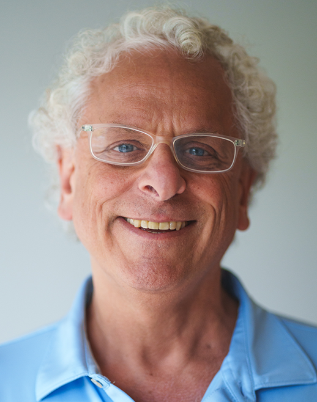

Contact
Say hello.
If you're building something in Seattle — especially something with AI — I'd genuinely like to hear about it. I answer my own email.

The fastest way to reach me is email. You can also find me on LinkedIn and X, or through Forum3.